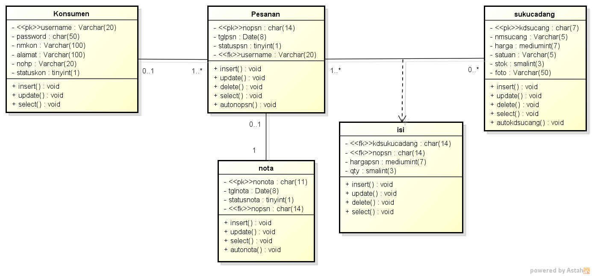

nim : 1811500001
nama : yolanda
kelompok : ti6j
hasil saya menyadur :
- perhitungan nilai kehadiran cukup membuat file readme.md di setiap direktory pertemuan github.com
dengan cara logindi githu.com lalu masuk ke akun yang tealh dibuat
- untuk UTS perindividu dan yang kita pelajari tentang UML
- untuk UAS yaitu persentasi perkelompok,masing masing kelompok tiga orang
1. pada pertemuan ini kita akan membahas class diagram
class diagram menggambarkan hubungan antar class atau hubungan antar tabel (struktur tabel)
class daigram terdiri dari :
- nama class atau nama tabel
- attribut diisi dengan field yang menjadi key , nama field , tipe data ,lebar/panjang data
- method diisi dengan operasi apa saja yang dilakukan pada class atau tabel, misalnya :
select/baca, insert/tambah/simpan, update/ ubah, delete/hapus, count/hitung jumlah, auto_numbering/nomor otomatis
2. untuk membuat class diagram caranya yaitu :
- buka aplikas astah community
- buat file baru
- lalu beri nama class daigram
- terakhir simpan file class diagram
tambahkan file pendukung seperti class daigram yang telah dibuat ke github.com
download file astah disini
